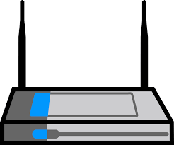

Firewalls

Firewalls prevent potentially harmful or unwanted data from entering a network and damaging local machines. The term firewall
is derived from the firefighting method of erecting a barrier to prevent the spread of fire, in relation to computers, a firewall prevents malicious data from breaching the network, or if the network is already breached, it will prevent the spread of the data to other computers. Before the late 1980s, the only form of network security was access control lists (ACLs) which existed in routers which only gave basic configuration as its function was solely to determine which IP addresses were denied or accepted into a network. The firewall continues developing to respond to the continual growth of the internet and the masses of potentially unwanted data to deter the evolving sophistication of cyber-attacks. To achieve this level of security, a set of protocols and policies are established, which essentially allow the firewall to filter and monitor incoming and outgoing data.
Firewalls provide protection in the form of software or hardware. Both forms block malicious content from entering a network but the method of preventing and dealing with that content is different, and although one form of firewall will suffice, software and hardware firewalls have their limits and capabilities; to get the most out of network security the optimal configuration would include the use of both hardware and software firewalls.
Hardware Firewalls
 Hardware firewalls are external products such as a router, which is an essential asset for companies or networks consisting of many computers as it will protect every machine within the network and prevent malicious data from entering the network. A hardware firewall can function with minimal configuration, and it is recommended to regularly maintain and test firewalls using third-party applications or an online firewall testing device to retain that effectiveness. If a computer is infected with a worm, the hardware firewall will not be affected as it is isolated. Hardware firewalls are not isolated in the area of network management, as the centralised nature of hardware firewalls allows convenient configuration from a single device and it will prevent users from changing settings.
Software Firewalls

Software firewalls, as in its name suggests it is a firewall that is installed or is provided with the operating system. A software firewall serves the same purpose of intercepting malicious data but it can only cater to the machine it is installed on. This makes it vulnerable to attacks if it is infected by a worm which disables the firewall, but it also presents many features that are tailored to the needs of users or administrators. These features may include the ability to specify what data a program or application can receive or send, or even prohibiting a program access to the internet. The further options and features implemented can remarkably increase the security of a network as these options can help compensate for the weak or vulnerable points of computers.
Proxy Firewalls

A proxy firewall operates as a gateway which prevents incoming connections from directly entering the network. The firewall will have rules and conditions which determines if the data can proceed into the network. A proxy firewall is not limited to intercepting incoming and outgoing internet requests it also has the capacity to observe layer 7 protocol traffic which means that the firewall would be able to prevent a HTTP based attack. The anonymity of proxy firewalls reinforces the security of the server as attackers who use the method of fingerprinting are unable to collect data of the operating system running the server by looking at packet header information from the hosts which contain the fields of Time to Live (TTL), window size, and TCP options. Proxies prevent this method of attack as the attacking system is not receiving packets created by the server. Significant disadvantages of proxy firewalls are that it is not compatible with all network protocols, therefore limiting its spectrum of coverage. There is also a reduction in performance associated with the use of proxy firewalls due to the additional processing requests from applications.
Application-layer Firewalls

Application-layer firewalls recognise and identify if applications or protocols are exploited. This is a response to the prevalence of attacks on web-servers. This firewall has the capacity to not only protect servers, but also the applications running on them, this is enabled by the ability of inspecting packets up to layer 7 of the OSI model, the application layer.
Stateful Inspection Firewalls

A Stateful Inspection Firewall has the basic function of recording, monitoring, and filtering traffic on the basis of state, port, and protocol assessed by preconfigured rules. If packets are present in the state records it will be permitted through without further analysis, new connections will have to undergo evaluations. The additional information recorded quickens packet processing.